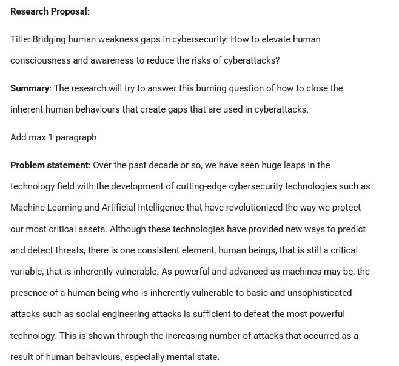

Research Methods and Professional Practice

Module Objective
This module provides a practical foundation in research methods that enables students to conduct research in practical settings. Its aims is to provide the student with a practical foundation in research methods that will enable them to conduct research in a practical setting. The module covers various tools and techniques that the student, as a researcher, may need and allows for feedback through cases and project tasks. It also provides essential insight into the legal, social, ethical and professional issues applicable to computing projects, as well as the relevant codes of practice and practices.
Module Outcome
This module will help students differentiate between inductive and deductive reasoning and understand why ethics are important and how they may relate to students area of research and professional practice. It appraises the professional, legal, social, cultural and ethical issues that affect computing professionals and the principles of academic investigation, applying them to a research topic in the applicable computing field. It helps evaluate critically existing literature, research design and methodology for the chosen topic, including data analysis processes. It also helps produce and evaluate critically a research proposal for the chosen topic.
Collaborative Discussions
Unit 1 - Unit 3: Collaborative discussions 1 (CLQ1)
ACM Code of Ethics Case study.Initial Post
Peer Response
Summary Post
Feedback
Unit 7 - Unit 9: Collaborative discussion 2 (CLQ2)
Initial Post
Peer Response
Summary Post
Feedback
Quizzes
Unit 1: Reasoning Quiz


Unit 12: Self Test Quiz
Reflective Activities
Unit 1: Reflective Activity 1
Reflective Piece on Computing Ethics.
This reflective piece is based on a computing professional employed by Randox Labs, a pharmaceutical company with research centers in the UK and the European
Union (EU).
For the purpose of developing its highly secretive drugs, and in an effort to gain a competitive advantage over its competitors, Randox Labs relies heavily on
the collection and processing of large volumes of data from various sources including patient data collected from hospitals and specialized clinics across the
European Union member countries and the UK. Although this data does not include the names of patients, it contains private information such as: age, gender,
part of their addresses, health status, ailments, treatments received, DNA data etc. This data is stored in huge data lakes accessible by authorized personnel.
During an unannounced audit of Randox Labs conducted by an external auditing company, it was found that the Labs fell short of the computing ethics
and its obligation to ensure data is processed as per the requirements mandated on data processors. Randox Labs may also be in violation of several
legislations pertaining to health care data due to not having all the necessary provisions to deal with such confidential and restricted data. Moreover,
it was found that some of the participating hospitals and clinics do not always obtain patient consents before sharing their records.
In their survey paper, titled "The Ethics of Computing: A Survey of the Computing-Oriented Literature" Stahl et al (2016) found a number of issues pertaining to
the ethics of computing. These issues which vary from privacy to justice and online piracy are increasingly affecting our society because of the expansion of
computing in our daily lives.
The following issues have been observed during the audit of Randox Labs.
Privacy: It was found that access to collected data was not restricted to authorized users. Data was shared with employees who were not authorized to
view or receive it. Moreover, the Data Loss Prevention Program implemented by the company did not prevent the leakage of data.
As an important tenet of computing ethics, Privacy is a human right guaranteed by Article 8 of the European Convention of Human Rights (Stahl et al, 2016).
Therefore, data privacy should be a number one concern for Randox as the lack of technical controls such as non-encryption and non-randomization of data may
lead to the identification of patients, their registered hospitals and physicians, their addresses etc. if leaked. The participating hospitals and clinics must also
ensure the consent of patients is obtained for the use of their personnel and medical data and that the transfer of the data is done in a secure and safe way so
that it does not fall into malicious hands.
Randox must ensure the following:
Unit 1: Reflective Activity 1
Reflective Piece on Computing Ethics.This reflective piece is based on a computing professional employed by Randox Labs, a pharmaceutical company with research centers in the UK and the European Union (EU).
For the purpose of developing its highly secretive drugs, and in an effort to gain a competitive advantage over its competitors, Randox Labs relies heavily on the collection and processing of large volumes of data from various sources including patient data collected from hospitals and specialized clinics across the European Union member countries and the UK. Although this data does not include the names of patients, it contains private information such as: age, gender, part of their addresses, health status, ailments, treatments received, DNA data etc. This data is stored in huge data lakes accessible by authorized personnel.
During an unannounced audit of Randox Labs conducted by an external auditing company, it was found that the Labs fell short of the computing ethics and its obligation to ensure data is processed as per the requirements mandated on data processors. Randox Labs may also be in violation of several legislations pertaining to health care data due to not having all the necessary provisions to deal with such confidential and restricted data. Moreover, it was found that some of the participating hospitals and clinics do not always obtain patient consents before sharing their records.
In their survey paper, titled "The Ethics of Computing: A Survey of the Computing-Oriented Literature" Stahl et al (2016) found a number of issues pertaining to the ethics of computing. These issues which vary from privacy to justice and online piracy are increasingly affecting our society because of the expansion of computing in our daily lives.
The following issues have been observed during the audit of Randox Labs.
Privacy: It was found that access to collected data was not restricted to authorized users. Data was shared with employees who were not authorized to view or receive it. Moreover, the Data Loss Prevention Program implemented by the company did not prevent the leakage of data. As an important tenet of computing ethics, Privacy is a human right guaranteed by Article 8 of the European Convention of Human Rights (Stahl et al, 2016). Therefore, data privacy should be a number one concern for Randox as the lack of technical controls such as non-encryption and non-randomization of data may lead to the identification of patients, their registered hospitals and physicians, their addresses etc. if leaked. The participating hospitals and clinics must also ensure the consent of patients is obtained for the use of their personnel and medical data and that the transfer of the data is done in a secure and safe way so that it does not fall into malicious hands.
Randox must ensure the following:
Consent: The audit found that hospitals and clinics sharing patient data do not always seek patient consent before sharing their medical records.
Patient consent is a very important issue that must be addressed. Patient medical records in most jurisdictions remain the property of the patient. Explicit patient consent must be sought for the sharing and distribution of their data outside of its intended use by the hospitals and the research center (Parliament.uk, 2015).
As a computing professional, there is a need to establish a Governance, Risk and Compliance (GRC) function if it does not already exist to develop relevant policies pertaining to the collection and processing of patient health data. The policy will make it a requirement for data custodian to obtain explicit consent of patients before their data is shared and to prohibit the use of non-consented data.
A Risk management team should also look at the various risks to the collected data, how it is processed, and the controls implemented to ensure the data is safeguarded. Lastly, a Compliance and legal team should be assembled to look at the relevant regulatory requirements from areas where data is being collected to ensure compliance with local data privacy and data protection regulations.
The following technical controls must be reviewed: encryption, anonymization, protection against phishing, authorization, process related to the loss or theft of devices, sharing of data, disposal of data, accessing data from non-secure locations.
Trust: The mishandling of patient data by Randox Labs may jeopardize the trust relation between medical providers and patients. Trust is a sacrosanct principle that is critical to the working dynamism between patients and healthcare providers. Consent in most cases will not be granted if trust is non-existent. As such, trust needs to be built over time to ensure patients have full confidence in their providers to use their data in the proper way as stated. Any deviation could have an irreversible impact on the working relation which may result in an indefinite damage. Therefore, safeguards and checkpoints should be implemented to validate controls periodically.
Research ethics : The audit found collected data is being used for purposes other than those consented by patients.
Collected patient data must be used only for the purpose for which it was collected. Using data to profile, discriminate or develop products that are targeted at certain demographic, ethnicities and races should be avoided and safeguards should be in place to ensure that this type of misuse and abuse of trust are avoided at all costs.
Legal : The audit found that Randox Labs may be in breach of data privacy regulations in the EU and the UK.
Legal issues are a big concern as long as patient medical records are being shared and distributed with 3rd parties. There are controls in the General Data Protection Regulation (GDPR) for the collection, transmission, processing and storage of health data (GDPR, 2018). In the US, the Health Insurance Portability and Accountability Act (HIPAA) legislation provides robust boundaries in the handling of health data (HHS, 2013). In the UK, the Health and Care Act 2022 provides measures relating to the collection and sharing of health and care data (Legislation.gov.uk, 2022). There are also provisions to protect such data in the Data Protection Act 2018 (HM Government, 2018).
As a 3rd party trusted to process and handle restricted patient data, Randox Labs failed to uphold the high standard of computing ethics required to ensure medical providers and patients have full confidence in its ability to safeguard their data. The lack of encryption and access control show a lax approach to data protection.
References
GDPR (2018). General Data Protection Regulation (GDPR). [online] General Data Protection Regulation (GDPR). Available at: https://gdpr-info.eu/ [Accessed 8 Oct. 2022].
HHS (2013). Summary of the HIPAA Security Rule. [online] HHS.gov. Available at: https://www.hhs.gov/hipaa/for-professionals/security/laws-regulations/index.html [Accessed 8 Oct. 2022].
HM Government (2018). Data Protection Act 2018. [online] Legislation.gov.uk. Available at: https://www.legislation.gov.uk/ukpga/2018/12/contents/enacted.
Legislation.gov.uk. (2022). Health and Care Act 2022. [online] Available at: https://www.legislation.gov.uk/ukpga/2022/31/section/96/enacted [Accessed 8 Oct. 2022].
Mwila, Ali. (2019). Data Loss Prevention. [online] Available at: https://www.researchgate.net/publication/335336220_Data_Loss_Prevention [Accessed 8 Oct. 2022].
Parliament.uk. (2015). [online] Available at: https://researchbriefings.files.parliament.uk/documents/SN07103/SN07103.pdf [Accessed 8 Oct. 2022].
Stahl, B., Timmermans, J. & Mittelstadt, B. (2016) The Ethics of Computing. ACM Computing Surveys 48(4):1-38. DOI: 10.1145/2871196
Stine, K. and Dang, Q. (2011), Encryption Basics, Journal of AHIMA, [online], https://tsapps.nist.gov/publication/get_pdf.cfm?pub_id=908084 [Accessed October 8, 2022]
Sweeney, L. (n.d.). Replacing Personally-Identifying Information in Medical Records, the Scrub System. [online] Available at: https://www.ncbi.nlm.nih.gov/pmc/articles/PMC2233179/pdf/procamiaafs00002-0370.pdf [Accessed 8 Oct. 2022].
Unit 5: Reflective Activity 2
Case Study: Inappropriate Use of SurveysSurveys are often useful to gauge the mood of a category of the population and to target a certain demographic. They provide valuable information that helps businesses and governments understand those they are serving.
However, surveys can also be used for hidden reasons often nefarious to manipulate public opinions and satisfy hidden agendas. The Cambridge Analytica survey scandal in 2018 is a flagrant example of a political scheme that used personal data to try and influence election campaigns and results (Boldyreva, 2018).
Although innocuous at first, the survey was designed to collect personal information of Facebook users to influence the election campaign in the US. Personal data was collected not only from Facebook users who participated in the survey but also from their connections (friends and families) who took no part in the survey and were unaware of their personal being collected (Boldyreva, 2018).
The data collection method used was unique and consisted of using Amazon Mechanical Turk, (Amazon Mechanical Turk, 2018) to recruit Facebook users to take part in a paid online survey. However, in order to participate, users were required to connect their Facebook accounts to the survey site which enabled the site, not only to collect data on participating users but also on their contacts (friends and families). This technique proved to be very effective as Cambridge Analytica managed to collect up to 50 million personal data of Facebook users (Boldyreva, 2018).
A personality survey questionnaire similar to the one used by Cambridge Analytica is available at the University of Cambridge Psychometrics Centre (Discover My Profile, N.D.). The test when completed provides participants with an “OCEAN” score (Diener & Lucas, 2019). An “OCEAN” score is the result of the calculation of the performance of 5 personality traits: Openness, Conscientiousness, Extroversion, Agreeableness, and Neuroticism (Diener & Lucas, 2019).
Personality tests have been used since the 1960s by social behaviour scientists to determine the traits of participants, their happiness, and their longevity. As personality survey questions provide deep insights into participants’ psychological traits, it is important that they are explicitly informed of the intended use.
Using this survey without informing users is professionally unethical as users’ consent was obtained on a false premise.
On a social level, the survey may reveal traits that even the participants are not aware of. The result of these tests could be shared with other 3rd parties and used to develop psychological profiles on users who are directly identifiable due to access to their Facebook accounts.
From a legal perspective, the use of such surveys without user consent is in breach of the Data Protection Act (DPA) (Data Protection Act, 2018) and the General Data Protection Regulation (GDPR) (GDPR, 2018) which mandate users’ consent explicitly before their personal data is accessed. It must be noted that GDPR was rushed in to prevent future abuses of user personal data on this industrial scale.
References
Amazon Mechanical Turk (2018). Amazon mechanical turk. [online] Mturk.com. Available at: https://www.mturk.com/ [Accessed 5 Nov. 2022].
Boldyreva, Elena. (2018). Cambridge Analytica: Ethics And Online Manipulation With Decision-Making Process. 91-102. 10.15405/epsbs.2018.12.02.10.
Data Protection Act (2018). Data Protection Act 2018. [online] Legislation.gov.uk. Available at: https://www.legislation.gov.uk/ukpga/2018/12/contents/enacted [Accessed 5 Nov. 2022].
Diener, E. and Lucas, R.E., (2019). Personality traits. General psychology: Required reading, 278.
Discover My Profile. (N.D.). Select Test. [online] Available at: https://discovermyprofile.com/test/personality/636617f86b1ccc6b3b2bcb60/- [Accessed 5 Nov. 2022].
GDPR (2018). What Is GDPR, the EU’s New Data Protection law? [online] GDPR.eu. Available at: https://gdpr.eu/what-is-gdpr/ [Accessed 5 Nov. 2022].
Seminar Preparations
Seminar 2 Preparation
For this exercise, I have selected Ransomware attacks as the topic.The following articles have been chosen based on their research methods.
In their research paper titled "Ransomware against police: diagnosis of risk factors via application of cyber-routing activities theory" Choi et al (2016) collected secondary data from social media and news outlets between 2013 and 2016 to analyze ransomware attacks against police departments in the US.
The research method used is consistent with Quantitative research methodology which relies on the collection of data on which statistical analysis is then applied (Saunders & Thornhill 2012).
By conducting a survey, the authors were able to collect data from 13 police departments. This data includes dates of reported cases, victim states, size of police department, ransom amount, ransom paid by the police and method of ransomware attacks to construct a victim profile and to identify what directly influenced the ransomware attacks (Choi et al, 2016). The analysis result which found the risk factor to be the online activities of users and the lax approach to cybersecurity are consistent with the current trend of ransomware infections and show a correlation between the attacks against the police departments and other well known attacks.
The research methodology used in this paper is appropriate and addressed the purpose of the research. Moreover, it provided evidence through the data collected and statistics to show evidence of why the police departments were victims of the ransomware attacks.
However, the data collected could be expanded to cover other more critical areas and to include additional data such as cybersecurity hygiene and culture in the various departments with widespread awareness of the risk of ransomware attacks.
In the second paper titled “Impact of trauma hospital ransomware attack on surgical residency training” Zhao et al (2018), applied the mixed research case study methodology using interviews and questionnaire to analyze the impact of ransomware attack on a hospital electronic health information system which led to the shutdown of the system for a few months. The author invited resident students to take part in the survey during the downtime of the system and then proceeded to collect the result by producing statistics that show the impact of the ransomware attacks on the residency training.
However, the surveys could have been expanded to show the root cause of the attack and provide recommendations to avoid this from occurring in the future.
In summary, both papers did provide answers to the questions and are consistent with the purpose of the research.
References
Choi, Kyung-Shick & Scott, Tim & LeClair, Daniel. (2016). Ransomware Against Police: Diagnosis of Risk Factors via Application of Cyber-Routine Activities Theory. International Journal of Forensic Science & Pathology. 4. 253-258. 10.19070/2332-287X-1600061.
Saunders, M., Lewis, P. & Thornhill, A. (2012) Research Methods for Business Students 6th ed. Pearson Education Limited.
Zhao et al (2018) Impact of Trauma Hospital Ransomware Attack on Surgical Residency Training. J Surg Res. 2018 Dec;232:389-397. doi: 10.1016/j.jss.2018.06.072. Epub 2018 Jul 19. PMID: 30463746.
Seminar 3 Preparation
The objective of this exercise is to answer the questions below.The Case
Ricardo works for the records department of his local government as a computer records clerk, where he has access to files of property tax records. For a scientific study, a researcher, Beth, has been granted access to the numerical portion “but not the corresponding names” of some records. Beth finds some information that she would like to use, but she needs the names and addresses corresponding with certain properties. Beth asks Ricardo to retrieve these names and addresses, so she can contact these people for more information and for permission to do further study.
Now consider, what are the ethical issues involved in deciding which of these options to pursue?
There are defined data protection roles assigned to entities interacting with data: Data subject, data controller, data processor and joint data protection officer etc. The following are some high-level definitions:
Supervisory Authority: A Supervisory Authority is a public authority in an EU country responsible for monitoring compliance with GDPR.
As an IT technician who represents the data controller, Ricardo cannot share and give permission to a 3rd party without consulting first the DPO who will ensure
compliance with the data protection controls which may require him/her to seek approval from the data subject. The DPO role is to ensure compliance with GDPR as the
data being processed is personal data that contains private information. Article 6 of GDPR defines strict conditions for the processing of personal data (GDPR, 2018).
Suppose Ricardo were responsible for determining allowable access to the files. What ethical issues would be involved in his deciding whether to grant access
to Beth?
R: The main issue is the lack of consent from the data subject. The data controller needs to ensure approval is sought and granted by the data subject before sharing
personal information with a 3rd party.
Should Beth be allowed to contact the individuals involved? That is, should the Records department release individuals' names to a researcher? What are
the ethical issues for the Records department to consider?
The data subject only consented to the data controller, in this case HMRC. The data subject is not aware of the agreement between the data processor and the data
controller. In order for the subject personal information to be shared with a 3rd party, the controller must seek the subject approval. As such Beth should not be
allowed to contact the individuals involved and nor should the record department release individuals’ names to Beth as it would be a breach of privacy and confidentiality
of the data protection regulation.
Suppose Beth contacts the individuals to ask their permission, and one-third of them respond giving permission, one-third respond denying permission,
and one-third do not respond. Beth claims that at least one-half of the individuals are needed to make a valid study. What options are available to Beth?
As the number required for the study is not sufficient, Beth could use the inductive reasoning to develop and test a theory (Miessler, 2018).
References.
Wolford, B. (2018). What Is GDPR, the EU’s New Data Protection law? [online] GDPR.eu. Available at: https://gdpr.eu/what-is-gdpr/ [Accessed 1 November 2022].
Miessler, D. (2018). Daniel Miessler. [online] Daniel Miessler. Available at: https://danielmiessler.com/blog/the-difference-between-deductive-and-inductive-reasoning/ [Accessed 1 November 2022].
e-Portfolio Activity: Literature Review Outline.
Unit 4: Literature Review and Research Proposal Outlines.


Feedback.
Unit 6: Wiki Activity.


Unit 6: e-Portfolio Update.
Data CollectionData will be collected using Surveys and Questionnaires.
1- Defining the Objective of the survey.
The objective of the survey will be established by identifying each of the questions that need to be answered, ensuring the clarity of the questions, that they are properly articulated, and free from bias.
I'll also be checking if it is possible to adapt an existing survey with a proven track record.
2- Design a methodology to collect data.
Next, I'll be designing a qualitative and quantitative methodology to measure the collected data.
3- Develop a survey format.
The questionnaire for the survey will be developed and posted on survey sites such as Surveyclircle and SurveyMonkey etc. The questionnaire will have both close-ended such as Yes/No, multiple choice, or scaled (for example 1 to 5 stars), and open-ended questions such as “Why?”, “How?,” and “What do you think?” and will be targeted at demographics such as young, old, male, female, etc.
4- Collect and analyze collected data.
As quantitative and qualitative survey results need to be analyzed in different ways, I'll be using different tools for each: As an example, for quantitative data analysis, applications such as Microsoft Excel, google Sheets, etc. can be used to filter the data by different criteria and use their built-in formulas to visualize the results. The process is as follows: Filter, calculate, cross-tabulate, and draw conclusion.
References
Intrac (N.D.). [online] Available at: https://www.intrac.org/wpcms/wp-content/uploads/2017/01/Surveys-and-questionnaires.pdf [Accessed 11 November 2022].
Unit 8: Research Proposal Outline.

Feedback.
Unit 7: Literature review
Literature ReviewFeedback
Unit 8 - Unit 9: Worksheets
Exe 8.1BExe 8.2B
Exe 8.3D
Exe 8.4G
Exe 8.6C
Exe 9.1D
Exe 9.2E
Exe 9.3B
Unit 11
Research Proposal PresentationResearch Proposal Presentation
Feedback
Feedback
Professional Skill Matrix
Professional Skills Matrix
SWOT
SWOT
Action Plan
Action Plan
Unit Reflections
Unit 1
As the first unit of this complex module, there was a lot to do. Seminar 1 was lengthy and full of information that needed to be digested and remembered to complete assigned tasks. With busy work schedules and family commitments, it was difficult to manage.
Although I'm familiar with some of the terms used in the unit, it took a while to get used to the differences between Deductive and Inductive reasoning. Reading about the methods and completing the quiz did help to understand how and when they are used.
However, after reviewing seminar 1, and participating in the CLQ1, I was able to get a better understanding of ethics in computing, the code of conduct from the Association of Computing Machinery and the British Computer Society (ACM, 2016; BCS, 2015) and researched deductive and inductive research methods (Woiceshyn & Daellenbach, 2018).
I also started researching an appropriate subject area for the literature review.
Unit 2
This unit was a continuation of unit 1 with the CQL1 peer response which I posted in response to Muhammad Akbari’s initial post (Akbary, 2022).The main requirements were straightforward however, the main issue was the topic to choose for the literature review and research proposal. There was a variety of subject areas in the list provided by the University. I assumed it would be easy to choose a topic, however, it became apparent that I was indecisive and struggled to choose a topic even though I'm familiar with most of the topics on the list. In the end, I chose 3 topics and waited a while before deciding to go for a current topic. Once the topic was selected, I started researching relevant literature. There were lots of articles and artifacts on the topic which demanded lots of reading. I also started completing the literature review guide questionnaire which took a while due to time constraints.
Overall, it was a difficult unit to get through. However, I managed to learn more about research questions and how to formulate them. I learned more about the different sections of a literature review (Randolph, 2007; Reece, 2008).
Unit 3
This unit introduced research methodologies and designs such as qualitative and quantitative (Saunders & Thornhill, 2012).Since the start of this module, time was a valuable but missing asset as I needed to complete the seminar 2 preparation, attend seminar 2 and complete the CLQ1 and post the summary. I fell behind schedule and had to spend long hours after work to complete the tasks. As for the ePortfolio, I was unable to update it although I had recorded all the items that needed to be included.
I learned a great deal about research designs (BRM, N.D.) and research methods (Sage, 2021) which I researched extensively. I also learned more about the tools and techniques such as surveys, polls, interviews, case studies, etc. used as part of research methods and how to use them. Overall, it was a very informative unit.
Unit 4
My main objective was to prioritise and submit the literature review outline before anything else and then work on the seminar preparation while completing the literature review which needed to be submitted in Unit 7.As I was struggling to understand the link between the literature review, the research proposal, and the capstone project, I contacted the tutor for advice and requested a one-to-one meeting.
The tutor's clarifications were very helpful as they provided the understanding, I needed to complete the tasks.
I learned a whole lot about the various data collection methods (Paradis et al., 2016) such as case studies (Rebolj, 2013), interviews, and surveys (Ponto, Julie, 2015), etc. as the unit provided more detailed information about the various data collection methods compared to unit 3.
Unit 5
The main activity for this unit is reflective Activity 2 which is related to the well-publicised case of Cambridge Analytica which used deceptive survey methods to collect the personal information of Facebook users (Boldyreva, 2018).As the case was well documented, there were lots of reading materials, which showed how Cambridge Analytica ignored ethics and codes of conduct to influence the elections in the US.
I really enjoyed working on the reflective activity as it reminded me to always be ethical.
Unit 6
I learned about questionnaire design and the different ways of obtaining responses (QuestionPro, 2021). The main learning point is that questionnaires need to be designed to get adequate responses for research. Questions cannot be generic or broad. They must be specific and concise. They can be open-closed or open-ended (Intrac, N.D.). In any case, questionnaires should enable respondents to provide answers that can be subjected to formulas and statistical analyses (Majid, 2017).
Unit 7
After lots of research, I submitted the literature review. The extensive reading and research on the impact of communication technology during lockdowns have provided me with a wealth of information on how technology has changed the way we live, work, and interact with each other which has enabled employees to work from anywhere (Tim Jacks, 2021). Even though technology can and has improved our way of life, it has also created societal and mental well-being issues that are isolating huge portions of our society (Aczel et al., 2021). Additionally, I also learned about the validation and reliability of the design of research methods which are critical to good research (Parveen & Showkat, 2017). Finally, I posted my Initial Post for CLQ 2 which is related to the manipulation of statistical data.
Unit 8
This unit was challenging as it is related to statistics which I'm not too familiar with, especially Inferential Statistics which is a field of Statistics that uses analytical tools for drawing conclusions (Zhang et al., 2018), and hypothesis testing which is a method to test results of surveys or experiments to check for meaningful results (Veazie, 2015).With regard to the worksheets, although the example worksheets provided step-by-step instructions on how to complete the scenario, the exercises and interpretations of the results needed additional reading and research.
Also, I found that some of the instructions failed to mention prerequisites such as Excel add-ons for Data Analysis that need to be enabled first to access the required menu to complete the exercises.
Overall, this was a new area of knowledge for me which enabled me to learn more about statistics and hypotheses and how they can be used to interpret and present data.
Unit 9
This unit was very exciting and showed how a lot of data can be analysed and represented graphically through various charts in Excel with formulas that make it possible to synthesise data and results. For instance, the histogram chart which uses bar graphs to display count or frequency data (Scott, 2008) was very informative and provided details that may otherwise require a lot of information to display.
The example and exercise worksheets and scenarios were easy to follow and very informative. The unit showed the good value of data analysis, an operation performed to summarise collected data and organise it in a way to provide answers to questions (Ibrahim, 2015).
Additionally, I submitted the summary of the Collaborative Discussion 2 (CLQ2) (Danialou, 2022) and agree with my peers that data should not be manipulated as it is unethical and may be in violation of data protection regulations and codes of conduct (Georgiou, 2021).
Unit 10
My first priority is to complete the presentation, submit the research proposal, and complete the remainder of the worksheets.I encountered a file size limit issue on the portal while uploading the presentation which was swiftly resolved by Computing Support.
Finally, I managed to complete the remaining exercises of the worksheets and submitted them ahead of the deadline.
Overall, I got a better understanding of research writing and its structure (Bacaro, 2018) and used this new knowledge to refine my research proposal.
Unit 11
It’s almost over. It has been a tough three months. My attention now is to my eportfolio, ensuring the required artifacts are present and easily accessible. The eportfolio is an important integrative learning tool that can showcase the learning journey of students (Basu, 2021). Over the next few days, I will be working to complete the eporfolio and submit it.I'm also completing the professional skill matrix, the action plan, and the SWOT form which is an important document that analyses and evaluates strengths, and weaknesses and can also be used to identify areas of improvement (Gürel, 2017). Going over the professional skill matrix shows how much I have learned and improved over the last 12 months and the gaps I need to close. It is a very useful document that really provides an overview of the learning journey and what remains to be completed.
Unit 12
Although I have managed projects previously in a professional capacity, this unit provided more information on project and risk management and the different project management methodologies (Chin et al., 2012) such as Agile (Shankarmani et al., 2012), Prince 2 (Pawar, 2017), Waterfall (Van Casteren, 2017), Scrum (Hidalgo, 2019) etc.It was a refresher unit for me as this subject is understood and implemented at a professional level.
The self-quiz test was easy to complete although I did get a few questions wrong initially before retaking the test.
References
ACM Ethics. (2016). Code of Ethics. [online] Available at: https://ethics.acm.org/code-of-ethics/.
Aczel B, Kovacs M, van der Lippe T, Szaszi B (2021) Researchers working from home: Benefits and challenges. PLoS ONE 16(3): e0249127. https://doi.org/10.1371/journal.pone.0249127
Akbari, Nasim Muhammad (2022) Peer Response. Available from: https://www.my-course.co.uk/mod/hsuforum/discuss.php?d=326849 [Accessed 5 December 2022].
Anderson, H & Hepburn, B. (2020) 'Scientific Method' in: Zalta, E. (Eds) The Stanford Encyclopedia of Philosophy (Winter 2020 edition). Metaphysics Research Lab, Stanford University.
Bacaro, Giovanni. (2018). Writing Scientific Research Articles: Strategies and Steps. 10.13140/RG.2.2.34128.61443.
Bailey, M. et al. (2013) Applying Ethical Principles to Information and Communication Technology Research: A Companion to the Menlo Report.
Basu, Rupa. (2021). E-Portfolios: An Integrative Learning Tool. 9. 46-49.
BCS (2015). BCS, THE CHARTERED INSTITUTE FOR IT CODE OF CONDUCT FOR BCS MEMBERS. [online] Available at: https://www.bcs.org/media/2211/bcs-code-of-conduct.pdf [Accessed 5 December 2022].
Boldyreva, Elena. (2018). Cambridge Analytica: Ethics And Online Manipulation With Decision-Making Process. 91-102. 10.15405/epsbs.2018.12.02.10.
British Research Methodology (BRM) (N.D.) Research Design.
Chin, C.M.M. & Yap, Eng Hwa & Spowage, Andrew. (2012). Project Management Methodologies: A Comparative Analysis. Journal for the Advancement of Performance Information & Value. 4. 10.37265/japiv.v4i1.102.
Danialou, Mohamed (2022) Peer Response. Available from: https://www.my-course.co.uk/mod/hsuforum/discuss.php?d=332433 [Accessed 5 December 2022].
Georgiou, Andreas V. (2021) ‘The Manipulation of Official Statistics as Corruption and Ways of Understanding It’. 1 Jan. 2021 : 85 – 105
Gürel, Emet. (2017). SWOT ANALYSIS: A THEORETICAL REVIEW. Journal of International Social Research. 10. 994-1006. 10.17719/jisr.2017.1832.
Hidalgo ES. (2019) Adapting the scrum framework for agile project management in science: case study of a distributed research initiative. Heliyon. 2019 Mar 29;5(3):e01447. doi: 10.1016/j.heliyon.2019.e01447. Erratum in: Heliyon. 2019 Apr 30;5(4):e01542. PMID: 30976706; PMCID: PMC6441834.
Ibrahim, Muhammad. (2015). The art of Data Analysis. Journal Of Allied Health sciences Pakistan. 1. 98-104.
Intrac (N.D.). [online] Available at: https://www.intrac.org/wpcms/wp-content/uploads/2017/01/Surveys-and-questionnaires.pdf [Accessed 5 December 2022].
Majid, Umair. (2017). Research Fundamentals: The Research Question, Outcomes, and Background. The Undergraduate Research in Natural and Clinical Science and Technology (URNCST) Journal. 1. 10.26685/urncst.14.
Paradis, Elise & O’Brien, Bridget & Nimmon, Laura & Bandiera, Glen & Martimianakis, Maria. (2016). Design: Selection of Data Collection Methods. Journal of Graduate Medical Education. 8. 10.4300/JGME-D-16-00098.1.
Parveen, Huma & Showkat, Nayeem. (2017). Validity, Reliability, Generalizability.
Pawar, Rupali & Mahajan, Kirti. (2017). Benefits and Issues in Managing Project by PRINCE2 Methodology. International Journal of Advanced Research in Computer Science and Software Engineering. 7. 190-195. 10.23956/ijarcsse/V7I3/0134.
Ponto, Julie. (2015). Understanding and Evaluating Survey Research. Journal of the advanced practitioner in oncology. 6. 168-171.
QuestionPro (2021) Questionnaire vs Survey: Is there a Difference?
QuestionPro (2021). What is research?
Randolph, Justus. (2007). A Guide to Writing the Dissertation Literature Review. Practical Assessment, Research, & Evaluation. 14.
Rebolj, A. Biba. (2013). The case study as a type of qualitative research. Journal of Contemporary Educational Studies. 28–43.
Reece, G. (2008). Critical Thinking and Transferability: A Review of the Literature. [online] Available at: http://people.umass.edu/curtis/academics/researchtoolbox/pdfs/Reece_LitReview_2010.pdf [Accessed 5 December 2022].
Sage (2021) Sage Research Methods: Methods Map.
Scott, David. (2008). Histograms: Theory and Practice. 10.1002/9780470316849.ch3.
Saunders, M., Lewis, P. & Thornhill, A. (2012) Research Methods for Business Students 6th ed. Pearson Education Limited.
Shankarmani, Radha & Pawar, Renuka & Mantha, S. & Babu, Vinaya. (2012). Agile Methodology Adoption: Benefits and Constraints. International Journal of Computer Applications. 58. 10.5120/9361-3698.
Tim Jacks (2021) Research on Remote Work in the Era of COVID-19, Journal of Global Information Technology Management, 24:2, 93-97, DOI: 10.1080/1097198X.2021.1914500
Van Casteren, Wilfred. (2017). The Waterfall Model and the Agile Methodologies : A comparison by project characteristics - short. 10.13140/RG.2.2.10021.50403.
Veazie, P. J. (2015). Understanding Statistical Testing. SAGE Open, 5(1). https://doi.org/10.1177/2158244014567685
Woiceshyn, Jaana & Daellenbach, Urs. (2018). Evaluating Inductive versus Deductive Research in Management Studies: Implications for Authors, Editors, and Reviewers. Qualitative Research in Organizations and Management: An International Journal. 13. 00-00. 10.1108/QROM-06-2017-1538.
Zhang, Jin & Wang, Yanyan & Zhao, Yuehua & Cai, Xin. (2018). Applications of inferential statistical methods in library and information science. Data and Information Management. 2. 103-120. 10.2478/dim-2018-0007.
Unit 1: Scientific Investigation and EthicsMain areas
Assignments
Initial Post: ACM Code of Ethics Case study.
Reasoning Quiz result
Reflective Piece on Computing Ethics
This reflective piece is based on a computing professional employed by Randox Labs, a pharmaceutical company with research centers in the UK and the European Union (EU).
For the purpose of developing its highly secretive drugs, and in an effort to gain a competitive advantage over its competitors, Randox Labs relies heavily on the collection and processing of large volumes of data from various sources including patient data collected from hospitals and specialized clinics across the European Union member countries and the UK. Although this data does not include the names of patients, it contains private information such as: age, gender, part of their addresses, health status, ailments, treatments received, DNA data etc. This data is stored in huge data lakes accessible by authorized personnel.
During an unannounced audit of Randox Labs conducted by an external auditing company, it was found that the Labs fell short of the computing ethics and its obligation to ensure data is processed as per the requirements mandated on data processors. Randox Labs may also be in violation of several legislations pertaining to health care data due to not having all the necessary provisions to deal with such confidential and restricted data. Moreover, it was found that some of the participating hospitals and clinics do not always obtain patient consents before sharing their records.
In their survey paper, titled "The Ethics of Computing: A Survey of the Computing-Oriented Literature" Stahl et al (2016) found a number of issues pertaining to the ethics of computing. These issues which vary from privacy to justice and online piracy are increasingly affecting our society because of the expansion of computing in our daily lives.
The following issues have been observed during the audit of Randox Labs.
Privacy: It was found that access to collected data was not restricted to authorized users. Data was shared with employees who were not authorized to view or receive it. Moreover, the Data Loss Prevention Program implemented by the company did not prevent the leakage of data. As an important tenet of computing ethics, Privacy is a human right guaranteed by Article 8 of the European Convention of Human Rights (Stahl et al, 2016). Therefore, data privacy should be a number one concern for Randox as the lack of technical controls such as non-encryption and non-randomization of data may lead to the identification of patients, their registered hospitals and physicians, their addresses etc. if leaked. The participating hospitals and clinics must also ensure the consent of patients is obtained for the use of their personnel and medical data and that the transfer of the data is done in a secure and safe way so that it does not fall into malicious hands.
Randox must ensure the following:
Consent: The audit found that hospitals and clinics sharing patient data do not always seek patient consent before sharing their medical records.
Patient consent is a very important issue that must be addressed. Patient medical records in most jurisdictions remain the property of the patient. Explicit patient consent must be sought for the sharing and distribution of their data outside of its intended use by the hospitals and the research center (Parliament.uk, 2015).
As a computing professional, there is a need to establish a Governance, Risk and Compliance (GRC) function if it does not already exist to develop relevant policies pertaining to the collection and processing of patient health data. The policy will make it a requirement for data custodian to obtain explicit consent of patients before their data is shared and to prohibit the use of non-consented data.
A Risk management team should also look at the various risks to the collected data, how it is processed, and the controls implemented to ensure the data is safeguarded. Lastly, a Compliance and legal team should be assembled to look at the relevant regulatory requirements from areas where data is being collected to ensure compliance with local data privacy and data protection regulations.
The following technical controls must be reviewed: encryption, anonymization, protection against phishing, authorization, process related to the loss or theft of devices, sharing of data, disposal of data, accessing data from non-secure locations.
Trust: The mishandling of patient data by Randox Labs may jeopardize the trust relation between medical providers and patients. Trust is a sacrosanct principle that is critical to the working dynamism between patients and healthcare providers. Consent in most cases will not be granted if trust is non-existent. As such, trust needs to be built over time to ensure patients have full confidence in their providers to use their data in the proper way as stated. Any deviation could have an irreversible impact on the working relation which may result in an indefinite damage. Therefore, safeguards and checkpoints should be implemented to validate controls periodically.
Research ethics : The audit found collected data is being used for purposes other than those consented by patients.
Collected patient data must be used only for the purpose for which it was collected. Using data to profile, discriminate or develop products that are targeted at certain demographic, ethnicities and races should be avoided and safeguards should be in place to ensure that this type of misuse and abuse of trust are avoided at all costs.
Legal : The audit found that Randox Labs may be in breach of data privacy regulations in the EU and the UK.
Legal issues are a big concern as long as patient medical records are being shared and distributed with 3rd parties. There are controls in the General Data Protection Regulation (GDPR) for the collection, transmission, processing and storage of health data (GDPR, 2018). In the US, the Health Insurance Portability and Accountability Act (HIPAA) legislation provides robust boundaries in the handling of health data (HHS, 2013). In the UK, the Health and Care Act 2022 provides measures relating to the collection and sharing of health and care data (Legislation.gov.uk, 2022). There are also provisions to protect such data in the Data Protection Act 2018 (HM Government, 2018).
As a 3rd party trusted to process and handle restricted patient data, Randox Labs failed to uphold the high standard of computing ethics required to ensure medical providers and patients have full confidence in its ability to safeguard their data. The lack of encryption and access control show a lax approach to data protection.
References
GDPR (2018). General Data Protection Regulation (GDPR). [online] General Data Protection Regulation (GDPR). Available at: https://gdpr-info.eu/ [Accessed 8 Oct. 2022].
HHS (2013). Summary of the HIPAA Security Rule. [online] HHS.gov. Available at: https://www.hhs.gov/hipaa/for-professionals/security/laws-regulations/index.html [Accessed 8 Oct. 2022].
HM Government (2018). Data Protection Act 2018. [online] Legislation.gov.uk. Available at: https://www.legislation.gov.uk/ukpga/2018/12/contents/enacted.
Legislation.gov.uk. (2022). Health and Care Act 2022. [online] Available at: https://www.legislation.gov.uk/ukpga/2022/31/section/96/enacted [Accessed 8 Oct. 2022].
Mwila, Ali. (2019). Data Loss Prevention. [online] Available at: https://www.researchgate.net/publication/335336220_Data_Loss_Prevention [Accessed 8 Oct. 2022].
Parliament.uk. (2015). [online] Available at: https://researchbriefings.files.parliament.uk/documents/SN07103/SN07103.pdf [Accessed 8 Oct. 2022].
Stahl, B., Timmermans, J. & Mittelstadt, B. (2016) The Ethics of Computing. ACM Computing Surveys 48(4):1-38. DOI: 10.1145/2871196
Stine, K. and Dang, Q. (2011), Encryption Basics, Journal of AHIMA, [online], https://tsapps.nist.gov/publication/get_pdf.cfm?pub_id=908084 [Accessed October 8, 2022]
Sweeney, L. (n.d.). Replacing Personally-Identifying Information in Medical Records, the Scrub System. [online] Available at: https://www.ncbi.nlm.nih.gov/pmc/articles/PMC2233179/pdf/procamiaafs00002-0370.pdf [Accessed 8 Oct. 2022].
Unit1 Reflection.
As the first unit of this complex module, there was lot of reading to do to get familiar with the module as a whole. This module is not technical so it takes lot of getting used to in order to complete the assignments. There is also lot of information to digest and remember to work on the tasks. With time constraints, work and family commitments, it was a very tough unit to get through. However, I have learned to prioritize and to work through the issues especially the understanding.
Unit 2: Research Questions, the Literature Review and the Research Proposal
Main areas
Peer Response: ACM Code of Ethics Case study.
Literature Review and Research Proposal Outlines
Unit Reflection.
Unit 3: Research Methods
Main areas
Seminar 2 Preparation
For this exercise, I have selected Ransomware attacks as the topic.
The following articles have been chosen based on their research methods.
In their research paper titled "Ransomware against police: diagnosis of risk factors via application of cyber-routing activities theory" Choi et al (2016) collected secondary data from social media and news outlets between 2013 and 2016 to analyze ransomware attacks against police departments in the US.
The research method used is consistent with Quantitative research methodology which relies on the collection of data on which statistical analysis is then applied (Saunders & Thornhill 2012).
By conducting a survey, the authors were able to collect data from 13 police departments. This data includes dates of reported cases, victim states, size of police department, ransom amount, ransom paid by the police and method of ransomware attacks to construct a victim profile and to identify what directly influenced the ransomware attacks (Choi et al, 2016). The analysis result which found the risk factor to be the online activities of users and the lax approach to cybersecurity are consistent with the current trend of ransomware infections and show a correlation between the attacks against the police departments and other well known attacks.
The research methodology used in this paper is appropriate and addressed the purpose of the research. Moreover, it provided evidence through the data collected and statistics to show evidence of why the police departments were victims of the ransomware attacks.
However, the data collected could be expanded to cover other more critical areas and to include additional data such as cybersecurity hygiene and culture in the various departments with widespread awareness of the risk of ransomware attacks.
In the second paper titled “Impact of trauma hospital ransomware attack on surgical residency training” Zhao et al (2018), applied the mixed research case study methodology using interviews and questionnaire to analyze the impact of ransomware attack on a hospital electronic health information system which led to the shutdown of the system for a few months. The author invited resident students to take part in the survey during the downtime of the system and then proceeded to collect the result by producing statistics that show the impact of the ransomware attacks on the residency training.
However, the surveys could have been expanded to show the root cause of the attack and provide recommendations to avoid this from occurring in the future.
In summary, both papers did provide answers to the questions and are consistent with the purpose of the research.
References
Choi, Kyung-Shick & Scott, Tim & LeClair, Daniel. (2016). Ransomware Against Police: Diagnosis of Risk Factors via Application of Cyber-Routine Activities Theory. International Journal of Forensic Science & Pathology. 4. 253-258. 10.19070/2332-287X-1600061.
Saunders, M., Lewis, P. & Thornhill, A. (2012) Research Methods for Business Students 6th ed. Pearson Education Limited.
Zhao et al (2018) Impact of Trauma Hospital Ransomware Attack on Surgical Residency Training. J Surg Res. 2018 Dec;232:389-397. doi: 10.1016/j.jss.2018.06.072. Epub 2018 Jul 19. PMID: 30463746.
Summay Post
Tutor Feedback
Unit Reflections
Unit 4: Case Studies, Focus Groups and Observations
Main areas
Seminar 3 Preparation
The objective of this exercise is to answer the questions below.
The Case
Ricardo works for the records department of his local government as a computer records clerk, where he has access to files of property tax records. For a scientific study, a researcher, Beth, has been granted access to the numerical portion “but not the corresponding names” of some records. Beth finds some information that she would like to use, but she needs the names and addresses corresponding with certain properties. Beth asks Ricardo to retrieve these names and addresses, so she can contact these people for more information and for permission to do further study.
Now consider, what are the ethical issues involved in deciding which of these options to pursue?
• If Ricardo is not responsible for determining allowable access, should he release the names and addresses?
There are defined data protection roles assigned to entities interacting with data: Data subject, data controller, data processor and joint data protection officer etc. The following are some high-level definitions:
• Subject: data subject
• Controller: determines the purposes and means of the processing of personal data. be accountable, i.e., to take actions in line with GDPR, and to be able to explain the compliance with GDPR to data subjects and the Supervisory Authority, as and when required.
• Processor: A third party and legal entity that processes personal data on behalf of the controller
• Data Protection Officer (DPO): leadership role required by EU GDPR. This role exists within companies that process the personal data of EU citizens. A DPO is responsible for overseeing the data protection approach, strategy, and its implementation. In short, the DPO is responsible for GDPR compliance
Q Supervisory Authority: A Supervisory Authority is a public authority in an EU country responsible for monitoring compliance with GDPR.
R. As an IT technician who represents the data controller, Ricardo cannot share and give permission to a 3rd party without consulting first the DPO who will ensure compliance with the data protection controls which may require him/her to seek approval from the data subject. The DPO role is to ensure compliance with GDPR as the data being processed is personal data that contains private information. Article 6 of GDPR defines strict conditions for the processing of personal data (GDPR, 2018).
Q Suppose Ricardo were responsible for determining allowable access to the files. What ethical issues would be involved in his deciding whether to grant access to Beth?
R: The main issue is the lack of consent from the data subject. The data controller needs to ensure approval is sought and granted by the data subject before sharing personal information with a 3rd party.
Q Should Beth be allowed to contact the individuals involved? That is, should the Records department release individuals' names to a researcher? What are the ethical issues for the Records department to consider? The data subject only consented to the data controller, in this case HMRC. The data subject is not aware of the agreement between the data processor and the data controller. In order for the subject personal information to be shared with a 3rd party, the controller must seek the subject approval. As such Beth should not be allowed to contact the individuals involved and nor should the record department release individuals’ names to Beth as it would be a breach of privacy and confidentiality of the data protection regulation.
Q Suppose Beth contacts the individuals to ask their permission, and one-third of them respond giving permission, one-third respond denying permission, and one-third do not respond. Beth claims that at least one-half of the individuals are needed to make a valid study. What options are available to Beth?
As the number required for the study is not sufficient, Beth could use the inductive reasoning to develop and test a theory (Miessler, 2018). As the by=unber s
References.
Wolford, B. (2018). What Is GDPR, the EU’s New Data Protection law? [online] GDPR.eu. Available at: https://gdpr.eu/what-is-gdpr/ [Accessed 1 November 2022].
Miessler, D. (2018). Daniel Miessler. [online] Daniel Miessler. Available at: https://danielmiessler.com/blog/the-difference-between-deductive-and-inductive-reasoning/ [Accessed 1 November 2022]..
Unit Reflections
Unit 5: Interviews and Survey Methods
Main areas.
- Introduce you to interview methods and survey methods.
- Consider the definitions of population and sample.
- Introduce the concept of pre- and post-testing.
Reflective Activity 2
Surveys are often useful to gauge the mood of a category of the population and to target a certain demographic. They provide valuable information that helps
businesses and governments understand those they are serving.
However, surveys can also be used for hidden reasons often nefarious to manipulate public opinions and satisfy hidden agendas. The Cambridge Analytica survey
scandal in 2018 is a flagrant example of a political scheme that used personal data to try and influence election campaigns and results (Boldyreva, 2018).
Although innocuous at first, the survey was designed to collect personal information of Facebook users to influence the election campaign in the US.
Personal data was collected not only from Facebook users who participated in the survey but also from their connections (friends and families) who took no part
in the survey and were unaware of their personal being collected (Boldyreva, 2018).
The data collection method used was unique and consisted of using Amazon Mechanical Turk, (Amazon Mechanical Turk, 2018) to recruit Facebook users to take part
in a paid online survey. However, in order to participate, users were required to connect their Facebook accounts to the survey site which enabled the site,
not only to collect data on participating users but also on their contacts (friends and families). This technique proved to be very effective as
Cambridge Analytica managed to collect up to 50 million personal data of Facebook users (Boldyreva, 2018).
A personality survey questionnaire similar to the one used by Cambridge Analytica is available at the University of Cambridge Psychometrics Centre
(Discover My Profile, N.D.). The test when completed provides participants with an “OCEAN” score (Diener & Lucas, 2019). An “OCEAN” score is the
result of the calculation of the performance of 5 personality traits: Openness, Conscientiousness, Extroversion, Agreeableness, and Neuroticism
(Diener & Lucas, 2019).
Personality tests have been used since the 1960s by social behaviour scientists to determine the traits of participants, their happiness, and their longevity.
As personality survey questions provide deep insights into participants’ psychological traits, it is important that they are explicitly informed of the intended use.
Using this survey without informing users is professionally unethical as users’ consent was obtained on a false premise.
On a social level, the survey may reveal traits that even the participants are not aware of. The result of these tests could be shared with other 3rd parties
and used to develop psychological profiles on users who are directly identifiable due to access to their Facebook accounts.
From a legal perspective, the use of such surveys without user consent is in breach of the Data Protection Act (DPA) (Data Protection Act, 2018)
and the General Data Protection Regulation (GDPR) (GDPR, 2018) which mandate users’ consent explicitly before their personal data is accessed.
It must be noted that GDPR was rushed in to prevent future abuses of user personal data on this industrial scale.
References
Amazon Mechanical Turk (2018). Amazon mechanical turk. [online] Mturk.com. Available at: https://www.mturk.com/ [Accessed 5 Nov. 2022].
Boldyreva, Elena. (2018). Cambridge Analytica: Ethics And Online Manipulation With Decision-Making Process. 91-102. 10.15405/epsbs.2018.12.02.10.
Data Protection Act (2018). Data Protection Act 2018. [online] Legislation.gov.uk. Available at: https://www.legislation.gov.uk/ukpga/2018/12/contents/enacted
[Accessed 5 Nov. 2022].
Diener, E. and Lucas, R.E., (2019). Personality traits. General psychology: Required reading, 278.
Discover My Profile. (N.D.). Select Test. [online] Available at: https://discovermyprofile.com/test/personality/636617f86b1ccc6b3b2bcb60/- [Accessed 5 Nov. 2022].
GDPR (2018). What Is GDPR, the EU’s New Data Protection law? [online] GDPR.eu. Available at: https://gdpr.eu/what-is-gdpr/ [Accessed 5 Nov. 2022].
Unit Reflections
Unit 6: Questionnaire Design
Main areas.
- Introduce the different methods of obtaining responses.
- Discuss how to improve the responses you obtain.
- Consider how you would analyse the responses from each type of question.
Formative Activities
e-Portfolio update: Data Collection - Think about which data collection tool will be suitable for your area of investigation (in this module and/or in your
Project module). How will you collect it and what analysis would you hope to perform? How will this answer your research question? This should also be included in
the presentation of your Project Proposal in Unit 10.
I'll be collecting data using Surveys and questionnaires.
1- Defining the Objective of the survey.
I'll establish the objective of the survey by identifying each of the questions that need to be answered. I'll ensure the clarity of the questions, they are
properly articulated, and free from bias.
I'll also be checking if it is possible to adapt an existing survey with a proven track record.
2- Design a methodology to collect data.
Next, I'll be designing a qualitative and quantitative methodology to measure the collected data.
3- Develop a survey format.
The questionnaire for the survey will be developed and posted on survey sites such as Surveyclircle and SurveyMonkey etc. The questionnaire will have both
close-ended such as Yes/No, multiple choice, or scaled (for example 1 to 5 stars), and open-ended questions such as “Why?”, “How?,” and “What do you think?” and
will be targeted at demographics such as young, old, male, female, etc.
4- Collect and analyze collected data.
As quantitative and qualitative survey results need to be analyzed in different ways, I'll be using different tools for each:
As an example, for quantitative data analysis, applications such as Microsoft Excel, google Sheets, etc. can be used to filter the data by different criteria and use their built-in formulas to visualize the results.
The process is as follows: Filter, calculate, cross-tabulate, and draw conclusion.
Unit Reflections
Unit 7: Validity and Generalisability in Research
Main areas.
Unit Reflections
Unit 8: Inferential Statistics
Main areas.
Worksheets
Unit 8 Reflections
Unit 9: Analysing Qualitative Data
Main areas.
Unit Reflections
Unit 10: Research Writing
Main areas.
Unit Reflections
Unit 11: Professional Development – Your e-Portfolio
Main areas.
Unit Reflections
Unit 12: Project Management and Managing Risk
Main areas.
Unit Reflections